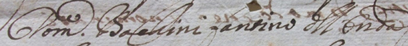

|
|
 |
2 luglio 1671
giovedì
ONDA
|
- prima di iniziare la lettura, si consiglia di leggere l'introduzione -
Il 30 giugno, memore evidentemente di disordini accaduti negli anni precedenti, la Biccherna, oltre alle consuete ingiunzioni riguardanti il trasporto della rena in Piazza, intimò che "non sia lecito ad alcuna persona impedire con qual'si voglia modo, o attioni i cavalli descritti per il corso data, che sarà la mossa, e che quelli delle Contrade non si partino da posti loro, et altro, che scritto in detto Bando"1.
Queste precauzioni, atte a far vivere un Palio privo di incidenti, non furono però sufficienti a scongiurare alcuni forti dissidi che si registrarono poche ore dopo al Prato di Camollia, appena che "era stata fatta la prova de' cavalli e numerati"2.
Tutto ebbe inizio poichè ad alcune fra le 8 Contrade che avevano aderito a partecipare, "parve ricevere qualche disvantaggio il non darsi a sorte nell'istesso stante il cavallo e fantino"3.
In un primo momento soltanto Lupa, Leocorno e Torre decisero di prendere parte al Palio, mentre il Nicchio, che aveva pure ricevuto un sussidio dalla Compagnia di Santo Stefano4, l'Istrice, la Civetta e l'Oca offrirono un diniego.
Inizialmente anche l'Onda era dalla parte di coloro che non volevano partecipare alla corsa, ma ebbe un ripensamento ed andò ad aggiungersi alle tre che avevano deciso di aderire.
Durante questa fase di estrema confusione, si inserirono i rappresentanti della Giraffa e della Chiocciola, che inizialmente non si erano iscritte a partecipare e decisero di sostituire le rinunciatarie.
Si andò quindi al Palio con sei contendenti e fra questi emerse l'Onda, ancora una volta con Bacchino, che pare fosse ormai divenuto il loro fantino di riferimento5.
Oltre che dal Comune, la vittoria dell'Onda è anche confermata dalle deliberazioni dell'Oca6 che rimase molto amareggiata dal comportamento della sua aggregata, che a detta degli Ocaioli, non aveva mantenuto la parola data, tanto che non le tributò gli onori che convenivano offrirsi alle amiche consorelle vittoriose.
Appianate le divergenze con l’Oca, il 15 luglio 1671 la Contrada di Malborghetto, riunitasi in consiglio, elargì "lire 33 contante pagate a domenico da barbarino per la vencita del palio e lire 7 pagateli anzi che vencesse il palio che in tutto fanno lire 40"7.
Da qui si nota che egli aveva avuto un acconto di 7 lire e che ricevette il resto a vincita ottenuta. Secondo quanto riportato dallo scritturale del Santa Maria della Scala8, alla Chiocciola andò "il premio", non specificando se per la miglior comparsa o perché era semplicemente arrivata seconda.

NOTE:
[1] ASS, Biccherna 878, 30 giugno 1671, c. 22
[2] ACOc, Deliberazioni 1667-1745, libro C, c. 13
[3] ACOc, Deliberazioni 1667-1745, libro C, c. 13
[4] ASS, Patrimonio Resti 1724, Compagnia di S.Stefano, c. 12
[5] ASS, Capitano di Giustizia 677, c. 548
[6] ACOc, Deliberazioni 1667-1745, libro C, c. 13v
[7] ACOn, Libro delle uscite, c. 65v
[8] ASS, Ospedale S.Maria della Scala 183, Ricordi e memorie 1453-1765, Tomo II, ms, c. 112

ABBREVIAZIONI BIBLIOGRAFICHE


RIEPILOGO
VITTORIE
DAL 1633
AL 1691

|
|
|